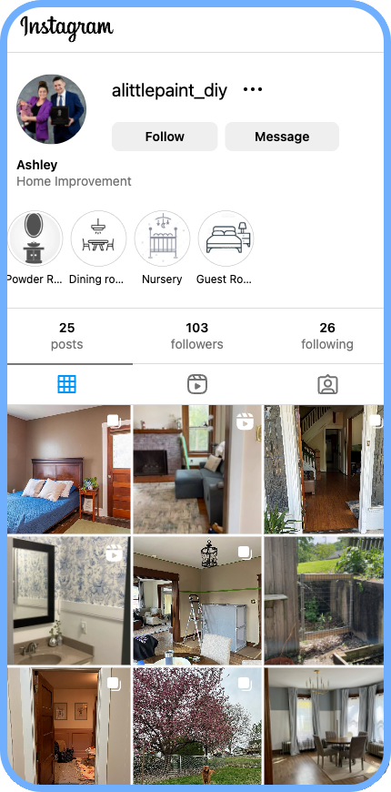

Write Simply
Why Less is More in Technical Writing
Hello, I’m Ashley!


Professional stuff…
I’ve been writing, editing, and maintaining technical content for over 13 years.
- Years at Posit: 5+
- I am the Lead Techincal Writer for Pro Product documentation
- + =

Do this!
Target: 12th grade reading level

Focused and concise